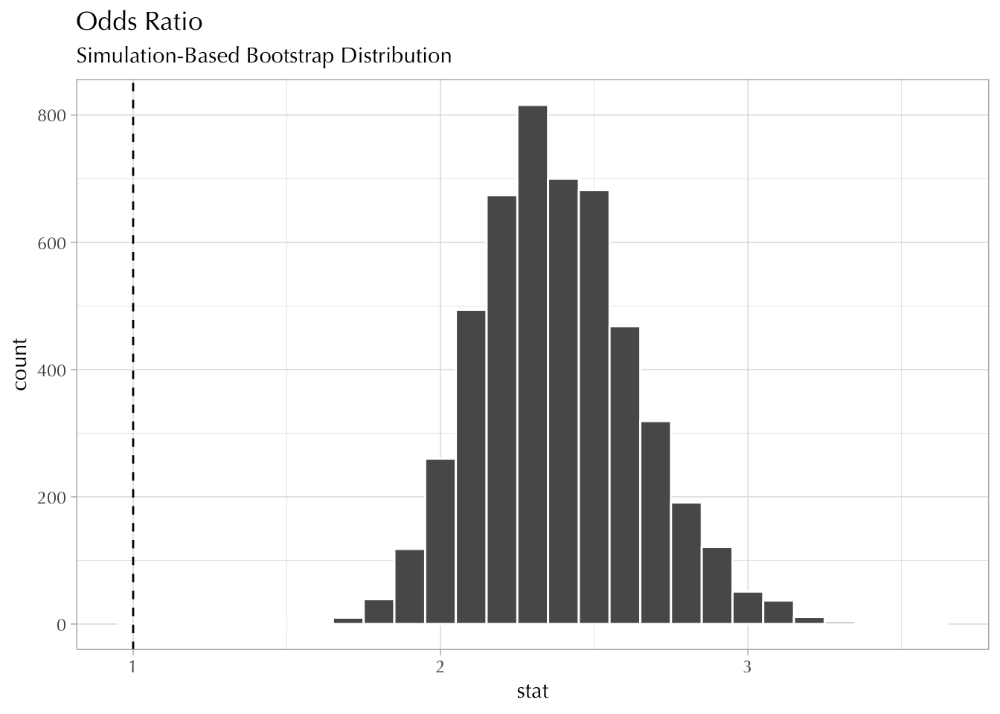
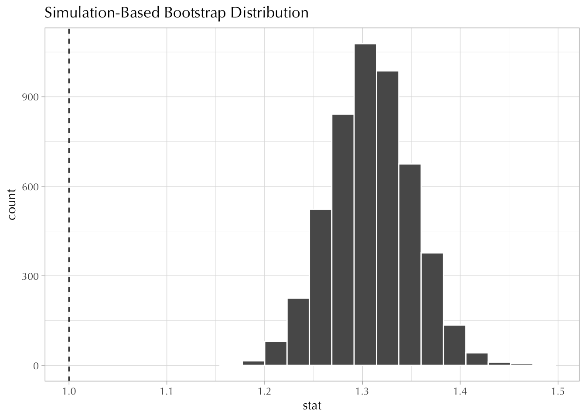
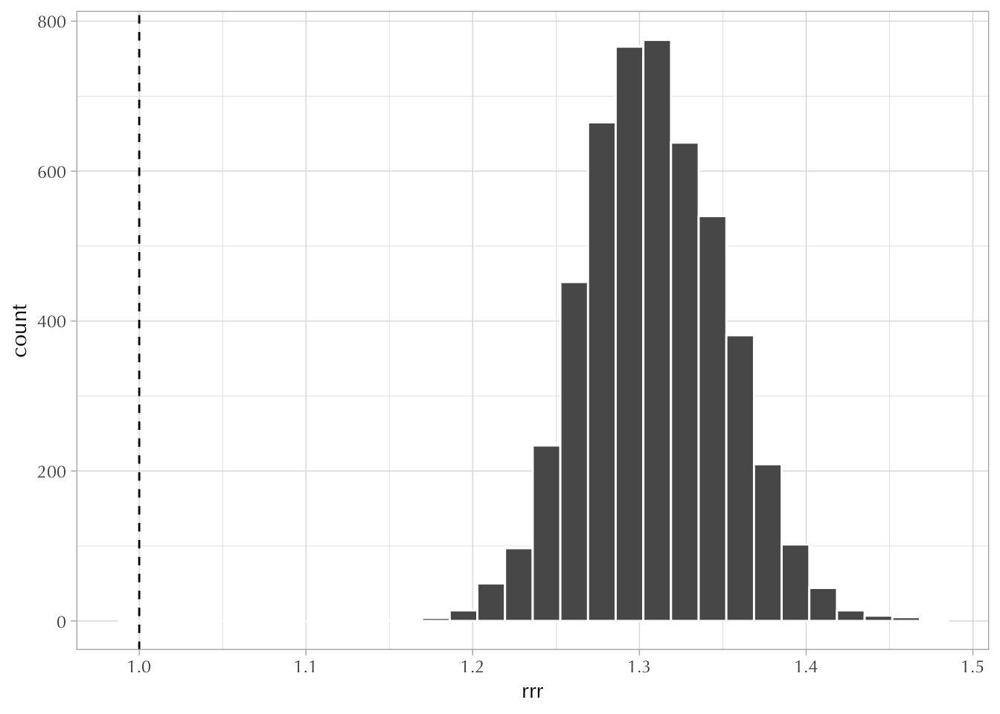

17 Solutions 7
17.1 Contingency Tables
Code
weekly
conservative 0 1
0 1243 257
1 495 24017.1.1 Exercise
It might be easier to modify the table so that we look at the margins:
weekly
conservative 0 1 Sum
0 1243 257 1500
1 495 240 735
Sum 1738 497 2235I will provide answers using (1) the contingency table, (2) base R, and (3) tidyverse
[1] 0.2223714[1] 0.2223714# A tibble: 1 × 1
p
<dbl>
1 0.222[1] 0.7776286[1] 0.7776286# A tibble: 1 × 1
p
<dbl>
1 0.778[1] 0.4828974[1] 0.4828974# A tibble: 1 × 1
p
<dbl>
1 0.483[1] 0.3265306[1] 0.3265306# A tibble: 1 × 1
p
<dbl>
1 0.327[1] 0.2848101[1] 0.2848101# A tibble: 1 × 1
p
<dbl>
1 0.285[1] 0.1073826[1] 0.1073826# A tibble: 4 × 4
weekly conservative n p
<int> <int> <int> <dbl>
1 0 0 1243 0.556
2 0 1 495 0.221
3 1 0 257 0.115
4 1 1 240 0.107[1] 0.5561521[1] 0.5561521Code
# A tibble: 1 × 4
weekly conservative n p
<int> <int> <int> <dbl>
1 0 0 1243 0.55617.1.2 Exercise
Here I chose the cappun variable, which asks Do you favor or oppose the death penalty for persons convicted of murder?
Code
d <- gss18 |>
select(attend, polviews, cappun) |>
haven::zap_missing() |>
haven::zap_labels() |>
mutate(
weekly = if_else(attend >= 7, 1L, 0L),
conservative = if_else(polviews >= 5, 1L, 0L),
cappun = if_else(cappun == 1, 1L, 0L)
) |>
drop_na()
crosstab2 <- table(conservative = d$conservative, capital_punishment = d$cappun)
addmargins(crosstab2) capital_punishment
conservative 0 1 Sum
0 600 805 1405
1 175 522 697
Sum 775 1327 2102Marginal probabilities:
capital_punishment
0 1
0.3686965 0.6313035 The probability that a person favors capital punishment is 0.63
The probability that a person does not favor capital punishment is 0.37
Now look at this:
capital_punishment
conservative 0 1
0 0.4270463 0.5729537
1 0.2510760 0.7489240| \(\Pr(CP \mid C) = 0.75\) | The probability that a conservative person favors capital punishment. |
| \(\Pr(CP^\complement \mid C) = 0.25\) | The probability that a conservative person opposes capital punishment |
| \(\Pr(CP \mid C^\complement) = 0.57\) | The probability that a non-conservative favors capital punishment. |
| \(\Pr(CP^\complement \mid C^\complement) = 0.42\) | The probability that a non-conservative opposes capital punishment. |
Now look at this:
capital_punishment
conservative 0 1
0 0.7741935 0.6066315
1 0.2258065 0.3933685| \(\Pr(C \mid CP) = 0.4\) | The probability that a capital punishment supporter is conservative. |
| \(\Pr(C \mid CP^\complement) = 0.22\) | The probability that a capital punishment opposer is conservative. |
| \(\Pr(C^\complement \mid CP) = 0.6\) | The probability that a capital punishment supporter is non-conservative. |
| \(\Pr(C^\complement \mid CP^\complement) = 0.77\) | The probability that a capital punishment opposer is non-conservative. |
Now look at this:
capital_punishment
conservative 0 1
0 0.28544244 0.38296860
1 0.08325404 0.24833492| \(\Pr(C \text{ and } CP) = 0.25\) | The probability that a person is conservative and favors capital punishment. |
| \(\Pr(C \text{ and } CP^\complement) = 0.08\) | The probability that a person is conservative and opposes capital punishment. |
| \(\Pr(C^\complement \text{ and } CP) = 0.38\) | The probability that a person is non-conservative and favors capital punishment. |
| \(\Pr(C^\complement \text{ and } CP^\complement) = 0.28\) | The probability that a person is non-conservative and opposes capital punishment. |
Assuming independence:
Code
capital_punishment
conservative 0 1
0 0.2464408 0.4219702
1 0.1222557 0.2093333Here, each cell is the product of the marginal probabilities. You probably calculated these probabilities differently. That’s OK.
17.2 Four Ways to Make Sense of Dependence
17.2.1 Exercise
Note. Recall that—under independence—these two probabilities would be the same. So there would be (1) zero difference in probabilities; (2) a relative risk ratio of one; (3) an odds ratio of one; and (4) a log odds ratio of zero.
Difference in proportions.
weekly
conservative 0 1
0 0.8286667 0.1713333
1 0.6734694 0.3265306[1] 0.1551973Conservatives are 15 percentage points more likely to attend religious ceremonies weekly.
Relative Risk Ratio
Conservatives’ probability of attending religious ceremonies weekly is almost 2 times greater.
Note the asymmetry. Non-conservatives’ probability of not attending weekly is 1.2 times greater.
Odds ratio
Code
[1] 0.4848485Code
[1] 0.2067578[1] 2.345007Note the symmetry now:
Log Odds Ratio
17.2.2 Exercise
Using infer
Code
d <- d |>
mutate(
CP = if_else(cappun == 1, "supports", "opposes"),
C = if_else(conservative == 1, "conservative", "other"),
W = if_else(weekly == 1, "weekly", "other")
)
boot_diff_in_props <- d |>
specify(W ~ C, success = "weekly") |>
generate(reps = 5e3, type = "bootstrap") |>
calculate("diff in props", order = c("conservative", "other"))
boot_diff_in_props |>
ggplot(aes(stat)) +
geom_histogram(color = "white", boundary = 0.1, binwidth = 0.005) +
geom_vline(xintercept = 0, linetype = "dashed") +
labs(
title = "Difference in Proportions",
subtitle = "Simulation-Based Bootstrap Distribution"
)Code
boot_rrr <- d |>
specify(W ~ C, success = "weekly") |>
generate(reps = 5e3, type = "bootstrap") |>
calculate("ratio of props", order = c("conservative", "other"))
boot_rrr |>
ggplot(aes(stat)) +
geom_histogram(color = "white", binwidth = 0.05) +
geom_vline(xintercept = 1, linetype = "dashed") +
labs(
title = "Relative Risk Ratio",
subtitle = "Simulation-Based Bootstrap Distribution"
)Code
boot_odds_ratio <- d |>
specify(W ~ C, success = "weekly") |>
generate(reps = 5e3, type = "bootstrap") |>
calculate("odds ratio", order = c("conservative", "other"))
boot_odds_ratio |>
ggplot(aes(stat)) +
geom_histogram(color = "white", binwidth = 0.1) +
geom_vline(xintercept = 1, linetype = "dashed") +
labs(
title = "Odds Ratio",
subtitle = "Simulation-Based Bootstrap Distribution"
)
Note. It’s easy to draw the sampling distribution for the log odds!
17.2.3 Exercise
Difference in Proportions
capital_punishment
conservative 0 1
0 0.4270463 0.5729537
1 0.2510760 0.7489240[1] 0.1759703Conservatives’ support for capital punishment is 17 percentage points higher than non-conservatives’.
Relative Risk Ratio
Conservatives’ support for capital punishment is 1.3 times greater than non-conservatives’.
Odds ratio
[1] 2.982858Code
[1] 1.341666[1] 2.223248The odds that a conservative supports capital punishment is 2 times larger than the odds that non-conservative supports capital punishment.
Log Odds Ratio
17.2.4 Exercise
Sampling distribution for the relative risk ratio
Code

Sampling distribution for the odds ratio
Code
How to do this without using the infer package?
Code
out <- replicate(5e3, {
i <- sample(1:nrow(d), replace = TRUE)
dr <- d[i, ] ## integer subsetting (see Week 1)
out <- table(
conservative = dr$conservative,
capital_punishment = dr$cappun
) |> prop.table(margin = 1)
rrr <- out[2, 2] / out[1, 2]
odds_ratio <- (out[2, 2] / (1 - out[2, 2])) / (out[1, 2] / (1 - out[1, 2]))
tibble(rrr, odds_ratio)
}, simplify = FALSE)
boot <- bind_rows(out) |>
rowid_to_column(var = "replicate") |>
mutate(log_odds_ratio = log(odds_ratio))
glimpse(boot)Rows: 5,000
Columns: 4
$ replicate <int> 1, 2, 3, 4, 5, 6, 7, 8, 9, 10, 11, 12, 13, 14, 15, 16, …
$ rrr <dbl> 1.291378, 1.329663, 1.279633, 1.356593, 1.307879, 1.357…
$ odds_ratio <dbl> 2.104675, 2.316725, 2.038844, 2.540664, 2.240313, 2.691…
$ log_odds_ratio <dbl> 0.7441613, 0.8401546, 0.7123828, 0.9324256, 0.8066156, …Code
`stat_bin()` using `bins = 30`. Pick better value with `binwidth`.
Code
`stat_bin()` using `bins = 30`. Pick better value with `binwidth`.